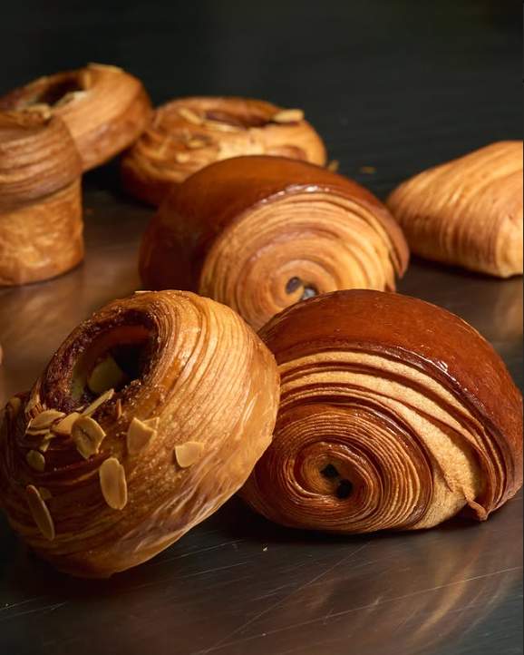
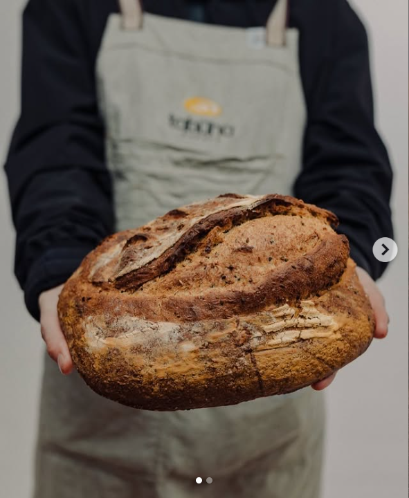
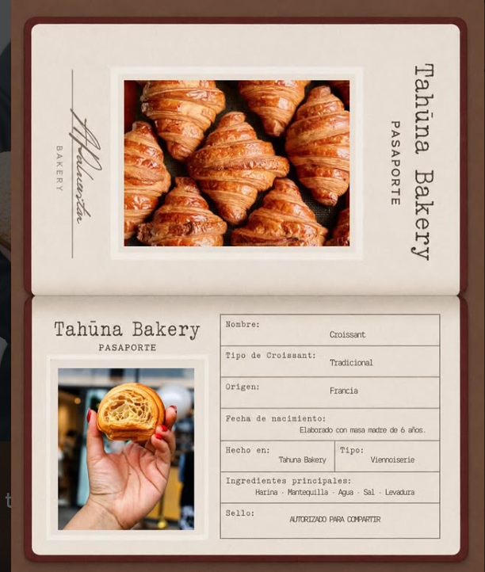
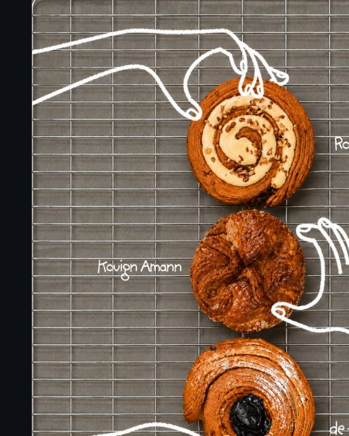
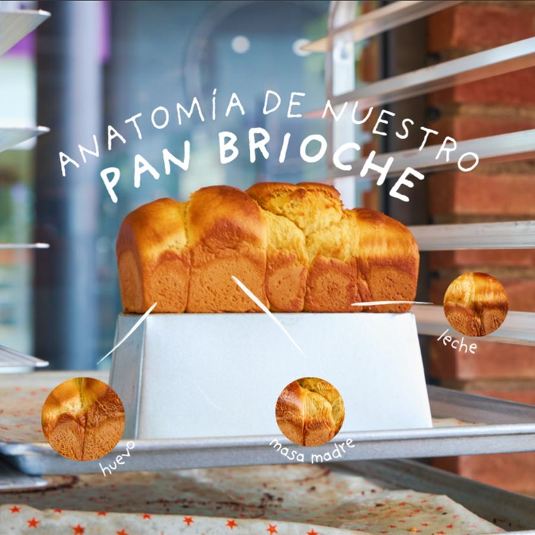
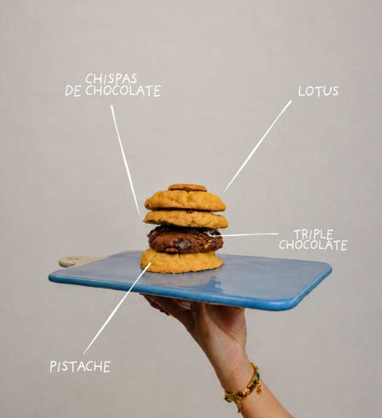
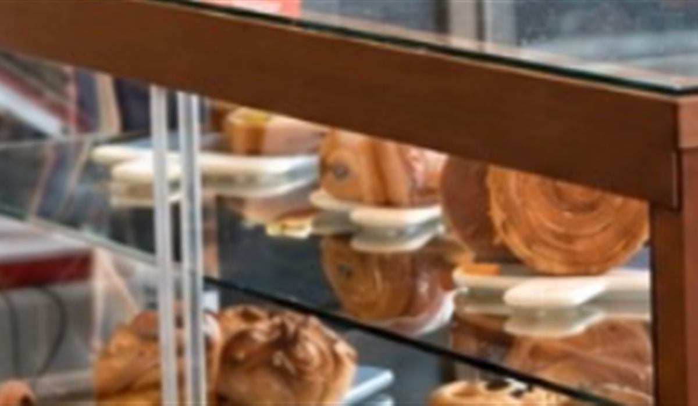

Panadería
Pan de masa madre
Fermentado con nuestra propia masa madre, de 6 años. Horneado en pequeños lotes.

Pan de masa madre elaborado con tiempo, técnica y tradición. Cada pieza, hecha a mano, una por una.

En Tahūna hacemos las cosas con calma: amasamos, laminamos, formamos y cuidamos cada pieza desde el primer momento, con nuestra propia masa madre.
Somos una panadería artesanal en Metepec, nacida de la idea de que un buen pan merece tiempo y técnica, no atajos. Todo se hornea en pequeños lotes y se hace a mano, uno por uno — por eso algunos días hay piezas que se agotan antes de la tarde.
Un vistazo a lo que sale del horno cada semana. El catálogo completo está en el menú.
Fermentado con nuestra propia masa madre, de 6 años. Horneado en pequeños lotes.

Origen Francia, hecho en Tahūna con masa madre y mantequilla. Laminado a mano.

Tres piezas, tres antojos. El Kouign Amann está disponible solo viernes y sábado, hasta agotar existencias.

Suave y dorado, con huevo, masa madre y leche.

Cuatro sabores de la casa: chispas de chocolate, Lotus, triple chocolate y pistache.

La vitrina cambia semana a semana. Síguenos en Instagram para ver las piezas del día.
Un ritual pensado especialmente para ti. Disponible lunes, miércoles, viernes y sábado. No aplica para Croffin y NY Roll.
C. Leona Vicario 386, Mz 032
Coaxustenco, 52150 Metepec, Méx.
Lunes a sábado · 9:00 a 20:00
Domingo · 9:00 a 16:00